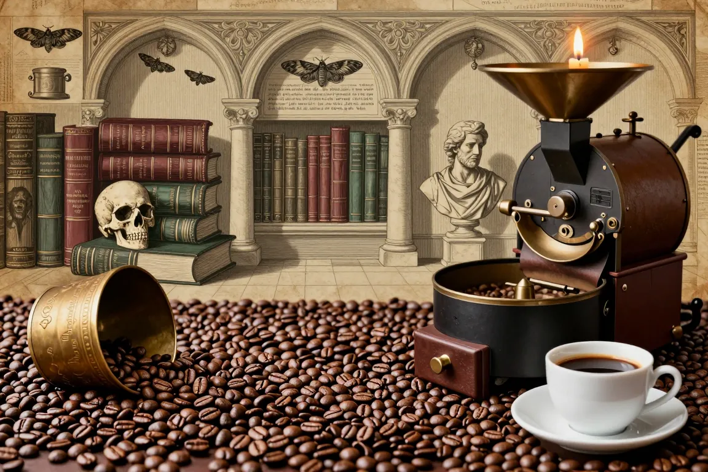

internet · 2019–now · also: Dark academia aesthetic, Gothic campus
Old libraries, candlelight, tweed, leather books, Latin and brown-green gloom in a romantic dream of a classical college. It spread on Tumblr and TikTok after 2019 and takes much from The Secret History.

Core thesis
Treat study as a dark, romantic rite: books, old stone and candlelight make the learned life feel fated.
Design principles
Set the ground in dark brown (#1E1712) or deep green (#16241C), never in pure black.
Use aged paper (#E9DCC0) for text areas and brass (#B08D57) for rules and highlights.
Pair a high-contrast serif for headings with an old-style serif for text; set headings in small capitals or italic.
Light photographs from one warm source, a candle or a window, at a 4:1 shadow ratio and with a vignette of 20%.
Show objects of study: a stacked book, a quill, a skull, a plaster bust, a Latin line at 12px with 0.2em tracking.
Frame content with a thin 1px brass line and an inner 4px gap, like a book plate.
Add a Roman numeral or a Latin motto in each section head.